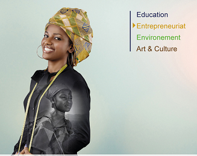
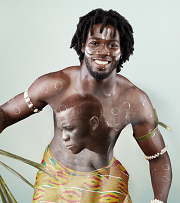

EDUCATION/FORMATION
L'inégalité des sexes demeure une caractérisique de l'évolution des effectifs dans le système éducatif, avec un d"séquilibre général défavorble aux filles
ARTS ET CULTURE
La Fondation FRANCS-GAINS veut promouvoir sa vitalité comme un vecteur du développement humain durable.
ENVIRONNEMENT
L'environnelent a un impact sur les individus, les familles, les communautés et les économies nationales.
INSERTION DES FEMMES FEMMES ET DES JEUNES
Favoriser un accès plus significatif et moyens de production(terre,financement,intrants...).
SA MISSION
C’est donc à cette équipe que revient la mission, par le canal de la Fondation NSIA, de soutenir la scolarisation,
l’éducation et la formation des enfants avec une attention particulière pour les jeunes filles. Investir dans l’éducation des
enfants afin de construire l’Afrique de demain, et de contribuer à leur développement intellectuel. Les autres missions de la fondation sont la contribution au développement de l’art et à l’épanouissement de la diversité culturelle, la promotion en particulier de l’art en milieu carcéral afin d’y développer la créativité ainsi qu’un programme de réinsertion dans le monde de l’art. Au niveau interne, la Fondation NSIA se veut un vecteur de cohésion sociale de l’entreprise qui fédère les employés autour de projets commun. Elle assure en outre une plus grande cohérence des initiatives dispersées des filiales dans un cadre d’actions structurées. Un chronogramme d’exécution de toutes ces actions sera établi dans tous les pays où le groupe est installé. De même il sera constitué une équipe de personnels volontaires bénévoles, pour la collecte, l’analyse, la sélection et de développement de projets. Le tout accompagné par une communication efficace.
SES ACTIONS
La fondation NSIA œuvrera pour la promotion de la scolarisation des jeunes filles, la construction d’écoles NSIA en milieu rural, la réhabilitation d’écoles NSIA dans les milieux urbains, un partenariat NSIA / Ministères de la femme, de la famille et de l’enfant et Partenariat NSIA/ Ministères de l’enseignement. La Fondation apportera son soutien aux formations d’excellence à travers des Bourses NSIA locales et internationales, des Kits scolaires et des Prix d’excellence NSIA de mathématiques, de littérature… sanctionnés par des voyages (en Europe, bourses, etc…) L’autre acte majeur qu’entend réaliser la Fondation NSIA, sera de promouvoir le vote d’une loi «Jules Ferry» en Côte d’Ivoire et dans les pays où le groupe est présent, instituant l’école obligatoire de tous les jeunes jusqu’à 14 ou 16 ans. Colloques, Tables rondes de réflexion, ainsi qu’un lobbying permanent seront réalisées, à cet effet, auprès des autorités parlementaires et administratives.
Quant à la promotion de la créativité artistique de la jeunesse, qui fait partie des actions à réaliser par la Fondation entre 2015 et 2020, elle consistera à favoriser le développement de l’art à l’école dans le programme para scolaire ( création de Clubs d’art NSIA dans les lycées et collèges) à contribuer à la découverte de jeunes talents (Expositions ‘NSIA Young Talents’, originales, en salle ou en outdoor, avec le parrainage d’un artiste de renom africain ou mondial) et à promouvoir l’art en milieu carcéral.Il s’agira, concrètement d’inciter les prisonniers à la création artistique et développer un programme de réinsertion dans le monde de l’art. La Fondation organisera ainsi avec un artiste peintre local, des cessions d’initiation à l’art. Elle développera aussi des partenariats avec des artistes de renom pour l’intégration des meilleurs artistes révélés en milieu carcéral, dans leurs activités.


Adresse
Fondation FRANCS-GAINS
I 1 Rue Paris Village, ROME
01 BP 1393 Suède 01
Téléphone: .............
FAX: ...............
E-mail: info@francs-gain.com
Website: www.francs-gainsfondation.org
.jpg)